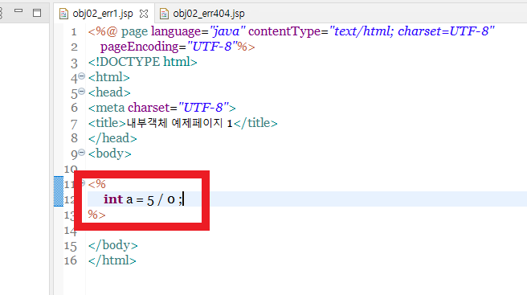
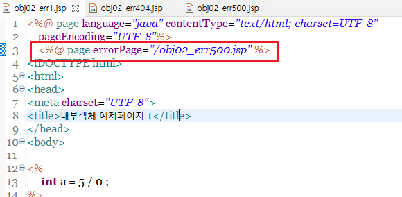
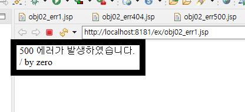
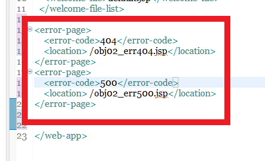
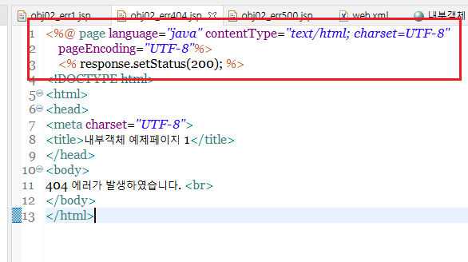
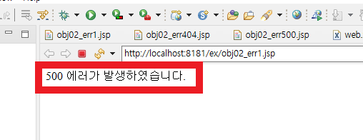
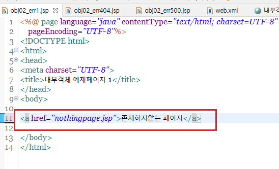
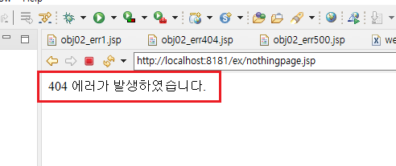

1
-

JSP페이지를 처리하거나, 서블릿 파일을 처리하다가 예외가 생겨서 오류가 발생할 수 있습니다.
-

여기서 에러가 발생하면 톰캣의 기본 에러페이지로 넘어가게 되는데,
해당 페이지는 이용자측의 신뢰도를 떨어뜨릴 수 있기 때문에 에러페이지를 별도로 구성하는것이 좋습니다.
-

첫번째로 page 지시자를 이용하는 방법입니다.
JSP페이지의 상단에 page 지시자로 위와같이 선언하여 에러페이지와 연결시킵니다.
이렇게하면 해당 페이지에서 에러발생시 작성된 페이지로 넘어가도록 해줍니다.
-

에러페이지를 작성할 때는 위와같이, exception개체를 사용하기 위한 isErrorpage를 true로 설정하며,
페이지의 상태값을 200으로 초기화해주어야합니다. exception개체는 에러를 표시하는 내부객체로, 에러내용을 표시해줍니다.
-

설정후, JSP파일을 실행하면 정상적으로 에러페이지로 넘어가며 원인도 출력되는것을 확인할 수 있습니다.
-

두번째로, web.xml을 이용하는 방법입니다. web.xml파일에 위와같이 특정 에러번호와 해당 번호에 이어지는
jsp페이지로 연결되도록 설정해줄 수 있습니다.
-

web.xml에서 설정을 한 상태이므로 이번에 작성되는 에러페이지는 이전과 같이 isErrorPage를 설정할 필요가 없습니다.
다만 페이지의 상태값은 200으로 초기화를 해주어야합니다.
-

다시 첫 페이지로 돌아가서 실행하면, 정상적으로 500 에러페이지로 이동한것을 알 수 있습니다.
-

다음으로, 404에러는 존재하지 않는 페이지로 이동하거나 참조할 때 발생합니다.
존재하는 페이지로의 링크를 만들어서 테스트합니다.
-

정상적으로 404에러페이지로 연결되는것을 확인할 수 있습니다.